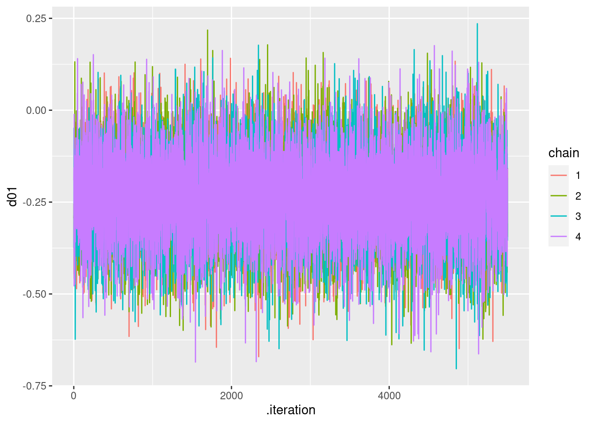

メタ分析
メタ分析の実施手順
まず，メタ分析について，以下のスライドを参考に，概要をつかんでください。
また，以下の国里の論文を読んで，メタ分析の必須事項についても確認ください。
GRADEについて
診療ガイドラインの作成に使用されるGRADEアプローチについてまとめています。メタ分析が医療の中でどのように活用されるのか，臨床試験の評価をどのように行うのかについても確認ください。
Rstanでベイジアンメタ分析
メタ分析を行うRパッケージは，いろいろありますし，解説も多いので，ここでは，ベイジアンメタ分析について説明をしていきます。『Network Meta-Analysis for Decision-Making』 は，ベイジアンメタ分析を学ぶ上で良い本ですが，紹介されているコードがWinBUGSだったりします（これ以外の書籍もWinBUGSが多い）。Mac & Stanユーザーとしては，WinBUGSはきついので，第2章で紹介されている一対比較(つまりネットワークメタ分析ではない普通の)データの固定効果モデルのコードをStanコードに書き直して説明しています。
使用するパッケージ
以下のパッケージを使います。
library(rstan)
library(tidybayes)
library(tidyverse)
library(bayesplot)
library(loo)データ
使用するのは，『Network Meta-Analysis for Decision-Making』の２章で紹介されている血栓溶解薬のデータです(Caldwell et la., 2005のデータ)。データセット全体の中からACC t-PA(治療0,今回はこれをコントロールにする)とPTCA(治療1)を比較した11の試験を使います。つまり，一対比較(Pairwise comparison)データです。
studyは研究のID，treatmentは治療の種類(0=ACC t-PA，1=PTCA)，deadは死者数，sampleSizeはその治療に参加した患者数です。studyNameは第1著者の姓か研究プロジェクト名， studyYearは論文の出版年です。
study <-c(1,2,3,4,5,6,7,8,9,10,11,1,2,3,4,5,6,7,8,9,10,11)
treatment <- c(0,0,0,0,0,0,0,0,0,0,0,1,1,1,1,1,1,1,1,1,1,1)
dead <- c(3,10,40,5,5,2,19,59,5,16,8,1,3,32,5,3,3,20,52,2,12,6)
sampleSize <- c(55,94,573,75,69,61,419,782,81,226,66,55,95,565,75,71,62,421,790,81,225,71)
treatmentName <- c("Acc_tPA","Acc_tPA","Acc_tPA","Acc_tPA","Acc_tPA","Acc_tPA","Acc_tPA","Acc_tPA","Acc_tPA","Acc_tPA","Acc_tPA","PTCA","PTCA","PTCA","PTCA","PTCA","PTCA","PTCA","PTCA","PTCA","PTCA","PTCA")
studyName <- c("Ribichini","Garcia","GUSTO-2","Vermeer","Schomig","LeMay","Bonnefoy","Andersen","Kastrati","Aversano","Grines","Ribichini","Garcia","GUSTO-2","Vermeer","Schomig","LeMay","Bonnefoy","Andersen","Kastrati","Aversano","Grines")
studyYear <- c(1996,1997,1997,1999,2000,2001,2002,2002,2002,2002,2002,1996,1997,1997,1999,2000,2001,2002,2002,2002,2002,2002)
# データフレーム化
data_pair <- data_frame(study,treatment,dead,sampleSize,treatmentName,studyName,studyYear)## Warning: `data_frame()` was deprecated in tibble 1.1.0.
## Please use `tibble()` instead.以下のような感じのデータです。
head(data_pair)## # A tibble: 6 x 7
## study treatment dead sampleSize treatmentName studyName studyYear
## <dbl> <dbl> <dbl> <dbl> <chr> <chr> <dbl>
## 1 1 0 3 55 Acc_tPA Ribichini 1996
## 2 2 0 10 94 Acc_tPA Garcia 1997
## 3 3 0 40 573 Acc_tPA GUSTO-2 1997
## 4 4 0 5 75 Acc_tPA Vermeer 1999
## 5 5 0 5 69 Acc_tPA Schomig 2000
## 6 6 0 2 61 Acc_tPA LeMay 2001固定効果モデルのStanコード
まず，data{}ブロックにおいて，使用するデータの定義をしています。教科書は行列形式でdeadやsampleSizeを読み込む形式ですが，少し今後の拡張を考えると面倒です。まずlong型のデータセットにしてから（上記のデータはすでにそうなっています），各列をStanに読み込ませます。
parameters{}ブロックでは，推定するパラメータとして，mu(各研究におけるベースライン=ここでは治療0の効果)とd01(治療0と治療1の差=治療0よりも治療1が優れるor劣る効果の大きさ)を準備しています。
model{}ブロックでは，死者数が二項分布に従うとして，死者数が，binomial_logit(試験の参加人数，死亡確率を構成する式)から生成されます。なお，死亡確率を構成する式は，治療が0の場合，はその試験のmuのみで，治療1の場合は，その試験のmuにd01を足したものになります。d01とmuの事前分布としては，幅のひろーい正規分布としました。
generated quantities{}ブロックでは，d01から治療0に対する治療1のオッズ比や有害の確率を計算したり，モデル比較用の対数尤度(log_lik)も計算しています。
以下のStanコードを“pairwise_fixed_effect.stan”という名前で保存します。
data{
int ld; // length of data
int nt; // number of treatment
int ns; // number of study
int study[ld]; // vector of the study id
int treatment[ld]; //vector of the treatment id
int dead[ld]; // vector of the number of dead
int sampleSize[ld]; // vector of the number of patient
}
parameters{
real d01;
real mu[ns];
}
model{
for(i in 1:ld){
if(treatment[i]==0){
dead[i] ~ binomial_logit(sampleSize[i],mu[study[i]]);
}else{
dead[i] ~ binomial_logit(sampleSize[i],mu[study[i]]+d01);
}
}
// prior
d01~normal(0,10000);
mu~normal(0,10000);
}
generated quantities {
real OR01;
real Prob_harm;
real log_lik[ld];
OR01 = exp(d01);
Prob_harm = step(d01);
for(k in 1:ld){
if(treatment[k]==0){
log_lik[k] = binomial_logit_lpmf(dead[k]|sampleSize[k],mu[study[k]]);
}else{
log_lik[k] = binomial_logit_lpmf(dead[k]|sampleSize[k],mu[study[k]]+d01);
}
}
}
パラメータ推定
Stanコードが書けましたので，早速，コンパイル＆サンプリングをします。まず，以下推定のための設定です。
ld = length(study)
rstan_options(auto_write = TRUE)
options(mc.cores = parallel::detectCores())
options(max.print = 99999)fit_fixed <- stan("pairwise_fixed_effect.stan",data=list(ld = ld, nt = 2, ns = 11, study = study, treatment = treatment, dead = dead, sampleSize = sampleSize), chains = 4, iter = 5500, warmup = 500, thin = 1)推定結果
結果を簡単に確認します。
print(fit_fixed,digit = 3)## Inference for Stan model: pairwise_fixed_effect.
## 4 chains, each with iter=5500; warmup=500; thin=1;
## post-warmup draws per chain=5000, total post-warmup draws=20000.
##
## mean se_mean sd 2.5% 25% 50% 75%
## d01 -0.236 0.001 0.118 -0.468 -0.314 -0.236 -0.156
## mu[1] -3.295 0.003 0.543 -4.469 -3.631 -3.256 -2.912
## mu[2] -2.533 0.002 0.299 -3.148 -2.729 -2.522 -2.326
## mu[3] -2.592 0.001 0.134 -2.864 -2.681 -2.589 -2.501
## mu[4] -2.578 0.002 0.339 -3.281 -2.795 -2.564 -2.343
## mu[5] -2.750 0.002 0.379 -3.550 -2.994 -2.730 -2.483
## mu[6] -3.149 0.003 0.486 -4.192 -3.452 -3.117 -2.810
## mu[7] -2.925 0.001 0.174 -3.280 -3.039 -2.922 -2.806
## mu[8] -2.471 0.001 0.113 -2.695 -2.547 -2.470 -2.393
## mu[9] -3.061 0.002 0.405 -3.930 -3.315 -3.039 -2.776
## mu[10] -2.622 0.001 0.202 -3.036 -2.753 -2.616 -2.485
## mu[11] -2.088 0.001 0.286 -2.684 -2.278 -2.078 -1.891
## OR01 0.796 0.001 0.094 0.626 0.731 0.790 0.856
## Prob_harm 0.022 0.001 0.147 0.000 0.000 0.000 0.000
## log_lik[1] -1.985 0.007 0.682 -3.862 -2.184 -1.733 -1.526
## log_lik[2] -2.966 0.007 0.996 -5.601 -3.402 -2.654 -2.209
## log_lik[3] -3.061 0.005 0.466 -4.374 -3.170 -2.880 -2.763
## log_lik[4] -1.995 0.004 0.411 -3.156 -2.087 -1.836 -1.734
## log_lik[5] -2.067 0.005 0.503 -3.517 -2.193 -1.873 -1.740
## log_lik[6] -1.628 0.004 0.476 -2.987 -1.741 -1.446 -1.324
## log_lik[7] -2.818 0.005 0.596 -4.495 -2.982 -2.585 -2.422
## log_lik[8] -3.312 0.005 0.558 -4.871 -3.436 -3.099 -2.959
## log_lik[9] -2.233 0.006 0.683 -4.173 -2.432 -1.980 -1.770
## log_lik[10] -2.582 0.005 0.448 -3.830 -2.674 -2.412 -2.303
## log_lik[11] -2.207 0.004 0.421 -3.424 -2.309 -2.042 -1.936
## log_lik[12] -1.331 0.003 0.442 -2.555 -1.469 -1.163 -1.029
## log_lik[13] -2.489 0.005 0.865 -4.683 -2.919 -2.284 -1.827
## log_lik[14] -2.907 0.004 0.396 -4.038 -2.995 -2.754 -2.654
## log_lik[15] -2.005 0.004 0.410 -3.159 -2.108 -1.846 -1.737
## log_lik[16] -1.737 0.004 0.373 -2.780 -1.823 -1.594 -1.502
## log_lik[17] -1.909 0.005 0.566 -3.498 -2.077 -1.697 -1.523
## log_lik[18] -2.895 0.005 0.629 -4.636 -3.099 -2.663 -2.459
## log_lik[19] -3.253 0.005 0.546 -4.760 -3.386 -3.041 -2.902
## log_lik[20] -1.681 0.003 0.490 -3.038 -1.841 -1.497 -1.343
## log_lik[21] -2.389 0.004 0.357 -3.398 -2.469 -2.251 -2.165
## log_lik[22] -2.033 0.003 0.348 -3.025 -2.114 -1.899 -1.811
## lp__ -1163.332 0.027 2.479 -1169.114 -1164.767 -1163.011 -1161.526
## 97.5% n_eff Rhat
## d01 -0.007 19981 1.000
## mu[1] -2.350 28955 1.000
## mu[2] -1.980 34459 1.000
## mu[3] -2.338 31456 1.000
## mu[4] -1.953 34990 1.000
## mu[5] -2.063 31552 1.000
## mu[6] -2.286 33361 1.000
## mu[7] -2.597 32212 1.000
## mu[8] -2.253 26140 1.000
## mu[9] -2.331 30073 1.000
## mu[10] -2.237 29509 1.000
## mu[11] -1.564 38946 1.000
## OR01 0.993 19854 1.000
## Prob_harm 0.000 18067 1.000
## log_lik[1] -1.469 10815 1.000
## log_lik[2] -2.024 18930 1.000
## log_lik[3] -2.730 10541 1.000
## log_lik[4] -1.706 9984 1.000
## log_lik[5] -1.703 10011 1.000
## log_lik[6] -1.291 14604 1.000
## log_lik[7] -2.373 14152 1.000
## log_lik[8] -2.920 12468 1.000
## log_lik[9] -1.709 12496 1.001
## log_lik[10] -2.274 8986 1.000
## log_lik[11] -1.905 10375 1.000
## log_lik[12] -0.991 19791 1.000
## log_lik[13] -1.492 33641 1.000
## log_lik[14] -2.626 10776 1.000
## log_lik[15] -1.706 10925 1.000
## log_lik[16] -1.475 11324 1.000
## log_lik[17] -1.472 13441 1.000
## log_lik[18] -2.397 16628 1.000
## log_lik[19] -2.863 14092 1.000
## log_lik[20] -1.295 20866 1.000
## log_lik[21] -2.141 9257 1.000
## log_lik[22] -1.785 10190 1.000
## lp__ -1159.462 8203 1.000
##
## Samples were drawn using NUTS(diag_e) at Wed Apr 14 04:51:33 2021.
## For each parameter, n_eff is a crude measure of effective sample size,
## and Rhat is the potential scale reduction factor on split chains (at
## convergence, Rhat=1).見にくいので，一部の結果のみを示します。若干ズレはありますが，教科書とほぼ同じ推定値になりました（関心のあるパラメータのみ掲載）。Rhatやn_effからもサンプリングも問題なさそうです。
| mean | se_mea | sd | 2.5% | 97.5% | n_eff | Rhat | |
|---|---|---|---|---|---|---|---|
| d01 | -0.2344 | 0.0009 | 0.1194 | -0.4689 | -0.0026 | 17330 | 0.9999 |
| OR01 | 0.7967 | 0.0007 | 0.0954 | 0.6257 | 0.9974 | 17086 | 0.9999 |
| Prob_harm | 0.0236 | 0.0012 | 0.1520 | 0.0000 | 0.0000 | 17264 | 0.9999 |
なお，収束判定は以下のように可視化してもできます（コードのみで図は割愛します）。R hat，トレースプロット，自己相関，有効サンプルサイズの順番です。
stan_rhat(fit_fixed, pars = c("d01", "mu"))## `stat_bin()` using `bins = 30`. Pick better value with `binwidth`.
stan_trace(fit_fixed, pars = c("d01", "mu"),inc_warmup=T)
stan_ac(fit_fixed, pars = c("d01", "mu"))
stan_ess(fit_fixed, pars = c("d01", "mu"))## `stat_bin()` using `bins = 30`. Pick better value with `binwidth`.
治療0に対する治療1のオッズ比をプロットしてみます。ACC t-PAと比べて，PTCAが死亡率を下げることが分かりますね。
fit_fixed %>%
spread_draws(OR01) %>%
ggplot(aes(x = OR01)) +
stat_density(fill = "gray75") +
stat_pointintervalh(aes(y = -0.05), point_interval = mean_qi, .width = .95) +
annotate("text", label = "mean, 95% quantile intervals", x = 1.1, y = -0.05, hjust = 0, vjust = 0.3) +
xlim(0.5,1.45)+
labs(x="Odds ratio")## Warning: 'stat_pointintervalh' is deprecated.
## Use 'stat_pointinterval' instead.
## See help("Deprecated") and help("tidybayes-deprecated").
単体では意味がないですが，モデル比較をすることもあるかと思い，Stanコードでは対数尤度も計算をしています。以下のコードでWAICも算出できます。
log_like <- extract_log_lik(fit_fixed)
waic(log_like)## Warning:
## 4 (18.2%) p_waic estimates greater than 0.4. We recommend trying loo instead.##
## Computed from 20000 by 22 log-likelihood matrix
##
## Estimate SE
## elpd_waic -55.9 2.9
## p_waic 6.7 1.0
## waic 111.8 5.9
##
## 4 (18.2%) p_waic estimates greater than 0.4. We recommend trying loo instead.これで，メタ分析の基本形である固定効果モデルをStanで実行できました！